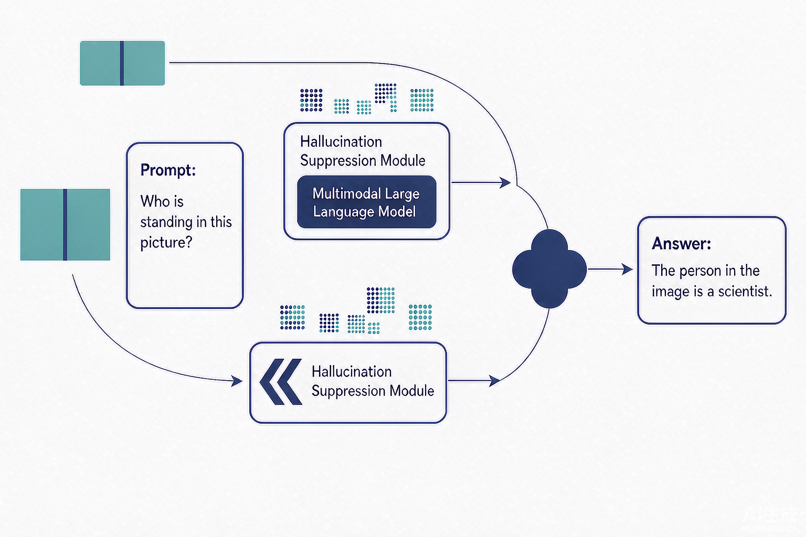

Problem
解决的问题
多模态大语言模型常描述输入图像中不存在的对象（对象幻觉）；训练阶段方案成本高，推理阶段对比解码开销大，而统一增强视觉注意力既会在已可靠位置引入多余干预，过强的视觉注意力还会诱发追加式对象幻觉。
Research on LLMs and VLMs · 2026 · CNIPA Patent
一种面向多模态大语言模型的对象幻觉抑制方法及系统
Problem
多模态大语言模型常描述输入图像中不存在的对象（对象幻觉）；训练阶段方案成本高，推理阶段对比解码开销大，而统一增强视觉注意力既会在已可靠位置引入多余干预，过强的视觉注意力还会诱发追加式对象幻觉。
Value
在无需重新训练、无需新增外部训练模块的条件下降低对象幻觉，同时保持或提升对真实图像对象的召回能力与描述完整性，提高输出与输入图像的一致性、可靠性和安全性。
Patent-grounded Academic Summary
主要创新性：构建“保守主路径优先”的非对称双路径结构：全局主路径为默认路径，局部校正路径仅在有必要时提供更强视觉注意力的候选，而非并列或平均融合。
学术影响力：在无需重新训练、无需新增外部训练模块的条件下降低对象幻觉，同时保持或提升对真实图像对象的召回能力与描述完整性，提高输出与输入图像的一致性、可靠性和安全性。该专利为大模型与多模态模型的安全评测、机制分析与系统防护提供了可迁移的方法和研究依据。

Technical Route
Innovation